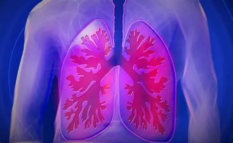
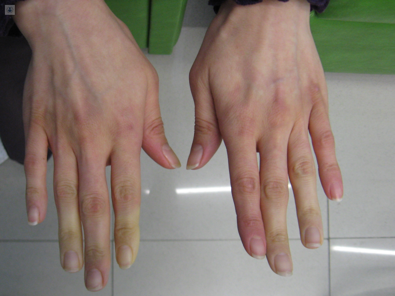
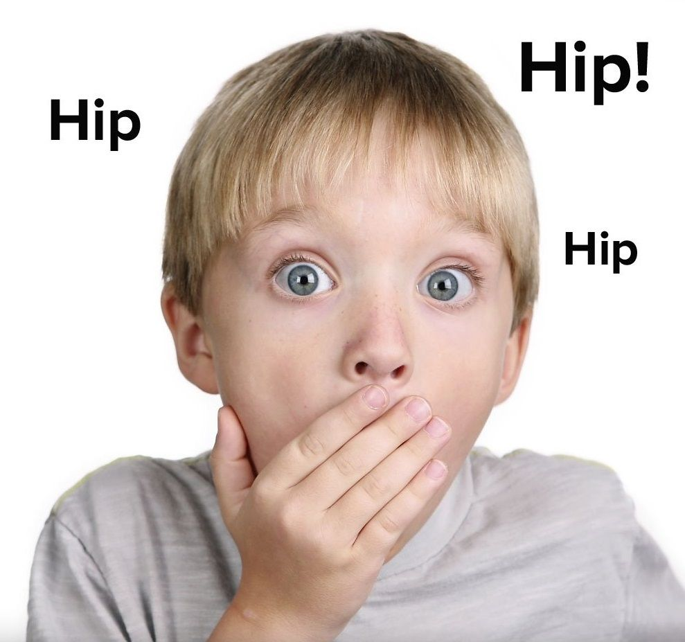
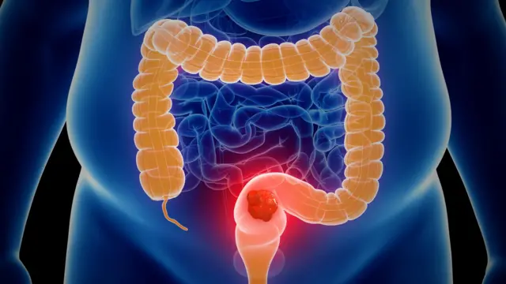

BACHILLERATO INTEGRAL COMUNITARIO DE SAN AGUSTÍN TLACOTEPEC
Juntos aprendamos mixteco
Aprende Mixteco con imágenes y audio
Enfermedad: Kue´e Ndakuiyo
Síntomas: Contracción muscular dolorosa
Enfermedad:Kue´e kuun
Síntomas: Heces líquidas frecuentes, dolor abdominal

Enfermedad: Dolor de estómago
Síntomas: Dolor abdominal, ardor

Enfermedad: Dolor de espalda
Síntomas: Dolor muscular en la zona lumbar
Enfermedad: Empacho
Síntomas: Pesadez estomacal, náuseas

Enfermedad: Ku´u xini
Síntomas: Dolor o presión en la cabeza
Enfermedad: Kue´e stnii
Síntomas: Fiebre, tos, congestión
Enfermedad: Nee nuu
Síntomas: Sensación de inestabilidad
Enfermedad: Varicela
Síntomas: Ampollas en la piel, fiebre
Enfermedad: Kue´e xii
Síntomas: Sed excesiva, orinar frecuentemente
Enfermedad: Kue´e ndujan
Síntomas: Expulsión del contenido del estómago

Enfermedad: Kue´e sayu
Síntomas: Irritación en la garganta
Enfermedad: Ku knini ini
Síntomas:Una sensación de malestar en el estómago que puede preceder al vómito

Enfermedad:Kue´e sayu xeen
Síntomas: Dolor en el pecho y sensación de malestar general
Enfermedad:Kue´e yu´u
Síntomas: Respuesta emocional intensa y repentina ante una situación que nos ha causado miedo o sorpresa

Enfermedad:Kue´e yiki
Síntomas: Agrupa una variedad de trastornos que afectan el aparato locomotor, causando dolor y malestar

Enfermedad: Kaki´i
Síntomas: Puedes sentir una ligera sensación de opresión en el pecho, el abdomen o la garganta.

Enfermedad:U´u nu´u o
Síntomas: Dolor al tragar o masticar y sensación de incomodidad o malestar en la boca.

Enfermedad:U´u ni tuu o
Síntomas:Un desequilibrio en el cuerpo que ocasiona cansancio y dolor

Enfermedad:Ta´vi yi´i so´o
Síntomas: Pequeño malestar en el oido
Enfermedad:Nee nuu
Síntomas: Los síntomas del desmayo incluyen palidez, mareos, sudoración, visión borrosa y debilidad

Enfermedad:Sajin
Síntomas: se caracteriza por diarrea severa con sangre y moco, dolor abdominal, fiebre y deshidratación.